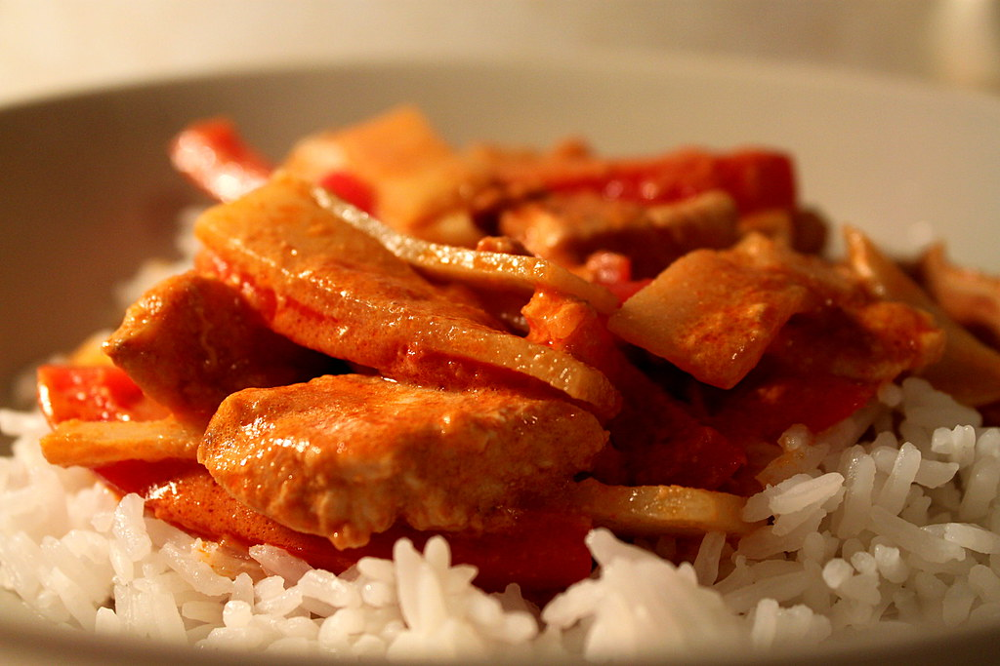

Korvstroganoff

Description
Korvstroganoff är en lättlagad och välsmakande korvgryta med bland annat
falukorv, lök, grädde
och tomatpuré som passar bra som
vardagsmiddag. Servera korvstroganoffen med kokt ris.
Ingredients
- 4 port ris eller annat gryn
- 550 g falukorv eller kycklingstekkorv
- 1 gli lök
- 1 msk olja
- 3 msk tomatpuré
- 2 1/2 dl matlagningsgrädde
- 1 dl mjölk
- 1 msk japansk soja
- 1 tsk dijonsenap
- peppar
- salt
Steps
- Koka riset enligt anvisningen på förpackningen.
- Skär korven i stavar. Skala och hacka löken.
-
Stek korv och lök i oljan i en stekpanna ca 5 minuter. Tillsätt
tomatpuré och fräs någon minut.
-
Rör ner grädde, mjölk, soja och dijonsenap. Låt sjuda ca 5 minuter.
- Smaka av med peppar och ev salt.
-
Till servering: Servera korvstroganoffen med ris och gärna
vitkålssallad.